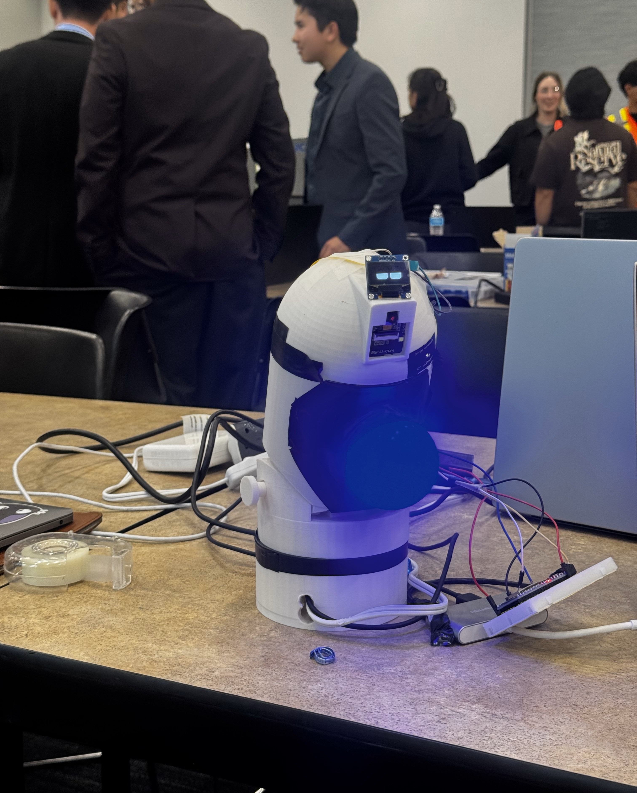
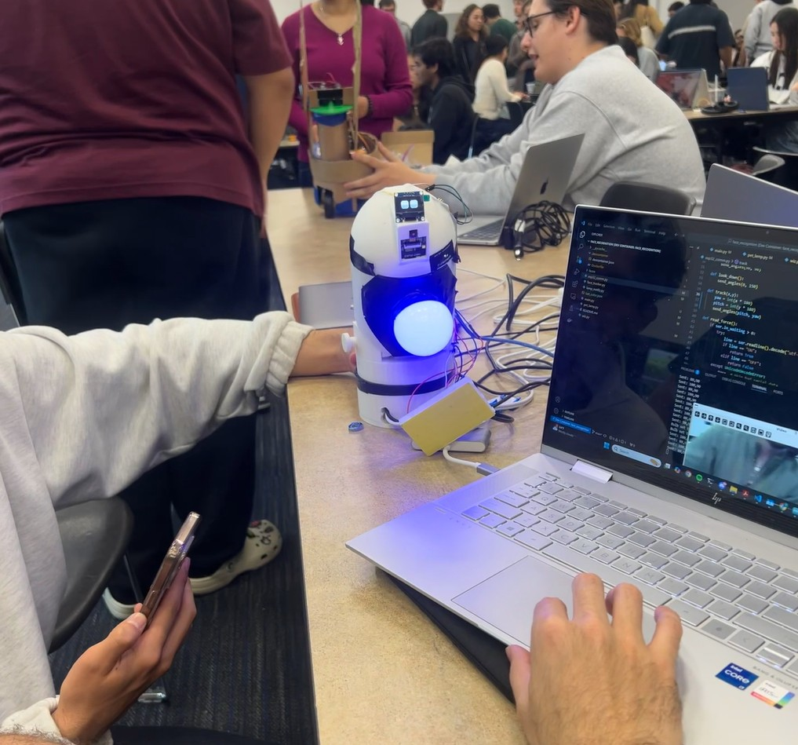
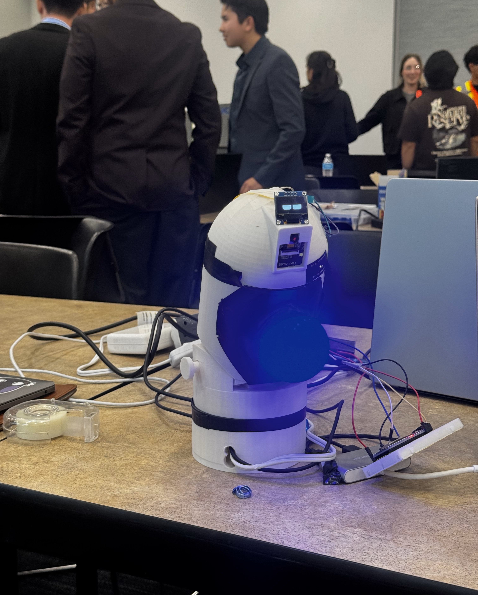
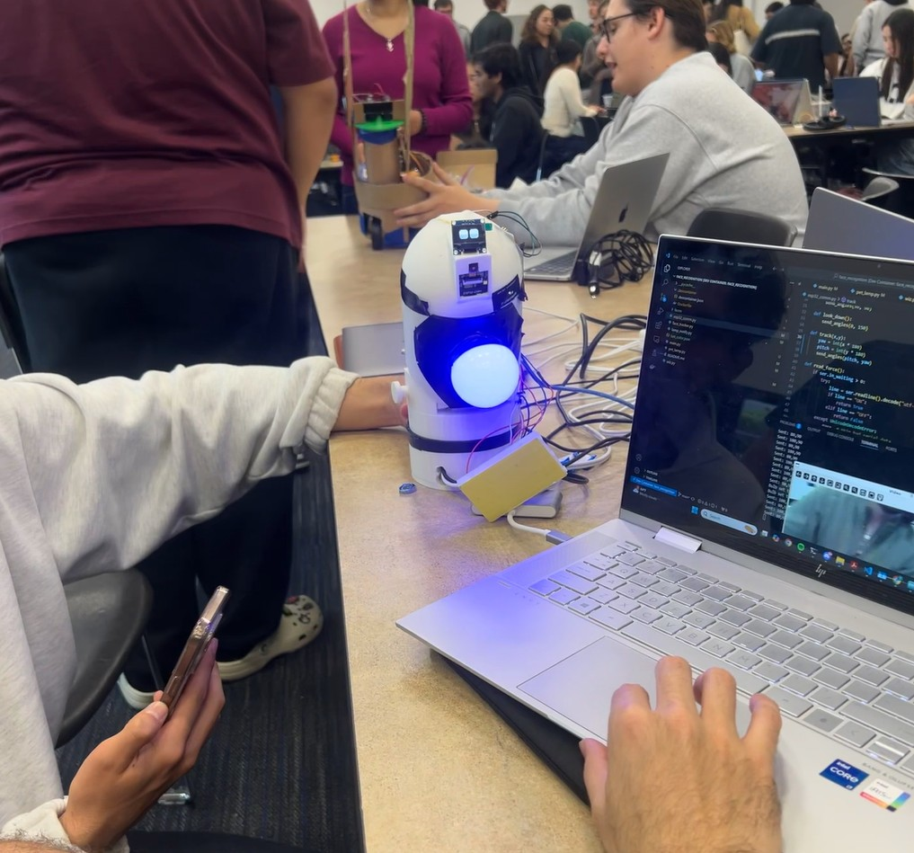

Emotional Support Pet
 



Description
At BITHACKS UCI 2025, we developed ESP (Emotional Supported Pet) to provide emotional companionship for individuals unable to own traditional pets due to allergies, time constraints, or restrictive housing rules. ESP helps combat loneliness and stress by responding to the user’s movement and touch, and expresses emotions through lights, motions, and sound.
As the hardware lead, I designed and constructed the device housing. Due to the 36 hour deadline, I was limited to a single 3D print. By verifying proper dimensions and optimizing print settings, I was able to successfully print the full device. However, minor adjustments with hot glue, soldering, and tape were necessary to ensure full functionality.
The complete device integrated load sensors to detect touch, RGB light bulb to display different emotions. In addition, the device tracked user movement through the camera and adjusted accordingly on two axes through two servo motors.
Skills
Rapid Prototyping, Soldering, SolidWorks, 3D printing